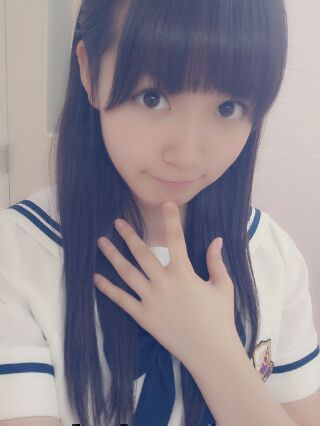

大阪ふっつっかっめー終わりましたー
へーい(( ^ω^ ))
今日は
お昼は北嶋さん立候補して
女中6にキャスティングしていただきました！
投票してくださったみなさん
本当にありがとうございました♪
まりかおめーとー∩^ω^∩
夜は緋咲子に立候補しましたー
結果はだめだったけど、こちらも
楽しくオーディションできたからよし！
...あっ開き直ったんじゃないんだよー
今日はラストかー
とりあお昼の公演は投票してきたけども
結構悩みました(´・ω・｀)
さてなんだろう。当ててみようみんな！
新制服かいきーん☆！

ワンピとセパレートの2タイプあって
ひめたはワンピですー
ごめんね。かいきーんゆーて
全身写ってないことは知ってますからね。
まあ実物をいつかみてやってくださいねー
昨日は表題曲を披露しましたね( ω )
夏！
アンダー曲もいつか披露したいねー
がんばりまーすー♪
今日は千秋楽！
よーし今からいくちゃんと
くっちゃべるぞー
(＊´・ω・＊)